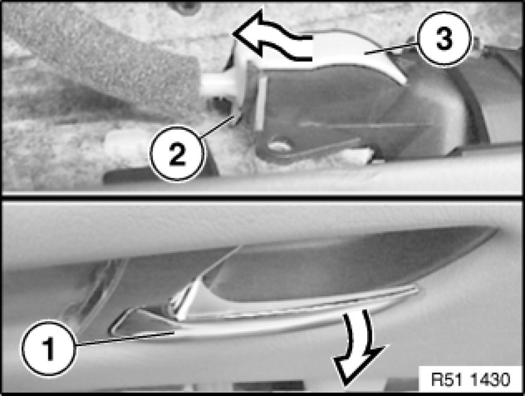

Removing and Installing/Replacing Bowden Cable For Inside Door Opener on Left or Right Front Door
51 21 235 - Removing and installing/replacing Bowden cable for inside door opener on left or right front door

Necessary preliminary tasks:
- Remove front door trim Removing and Installing Left or Right Front Door Trim Panel

Unhook Bowden cable for release lever:
- Tighten release lever (1).
- Lever out lock (2).
- Detach Bowden cable (3) towards rear/top.
Installation:
For fitting, press release lever (1) fully onto door trim panel.